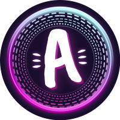

Part-time streamer, full-time searching for my dad. Let me know if you have seen him at twitch.tv/aniuly
Who am I?
Ania (formerly known as Yessisaur) is a part-time streamer (and full time gamer) from Ireland; She mainly focuses on Apex Legends and Valorant, but in the past she have been an avid player of Borderlands (the whole series of course), Sanctum 2, Portal, Torchlight II, Among us, amongst others... get it? You can follow her on Twitch and Twitter to receive updates on upcoming Streams, as well as other content, primarily consisting of memes of course.